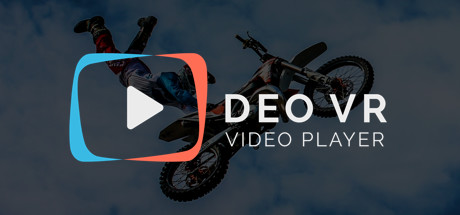

DeoVR Video Player
DeoVR Video Player
Details
|  | |
| Playtime | Not Played |
| Last Activity | Never |
| Added | 17/04/2020 |
| Modified | Never |
| Completion Status | Not Played |
| Source | Steam |
| Platform | PC |
| Release Date | 24/04/2018 |
| Community Score | 69 |
| Critic Score | |
| User Score | |
| Genre | Utilities Video Production |
| Developer | InfoMediji LTD |
| Publisher | VRFavs d.o.o. |
| Feature | Full Controller Support VR VR Gamepad VR Keyboard / Mouse VR Motion Controllers VR Room-Scale VR Seated VR Standing |
| Links | PCGamingWiki Community Hub Discussions Guides Store Page News |
Description
DeoVR is the best-in-class VR video player for all available headsets.
Enjoy the best moments of your favorite videos. The built-in VR media browser delivers the best VR content from YouTube and other popular video sites.
Get in touch any time at support@deovr.com
Talk to developers: https://forum.deovr.com
The player is used to playback and stream thousands of hours of VR videos every day. It is designed to provide the best performance of every video for each VR headset. The simple and intuitive interface is achieved by a hi-tech back-end invisible to the naked eye. It is constantly being updated to include more features and better quality playback. Many suggestions are sent daily and we are trying to incorporate these fast.
DeoVR unleashes the fullest potential of VR with:
- A zoom feature that brings you closer to the action, just like real life
- Tilt to adjust the video to your body position
- Height fits viewer’s height to match the camera’s POV
- Rotation provides another perspective of the action in the video
- Perfect Xbox Controller and integration for all known VR controllers
- A-B loop and slow-motion for the best moments in the video
- Vertical and horizontal stereoscopic off-sets perfectly align videos to viewer’s IPD and corrects video misalignments
- Head-tracking for 6DOF headsets gives you freedom of movement in the video
Special features:
1. The maximum resolution, frame rate and bitrate supported for each headset.
2. Optimisation for each known VR chipset, GPU and operating system
3. Advanced file manager with a useful ‘favorite folders’ feature
4. Quickly addressing user requests and customizations
5. Viewport cloud streaming allows 6K playback on Oculus Quest, Go and any Snapdragon headset. It overcomes the 4K decoding limitations of most mobile headsets by cutting a video into small pieces and simultaneously playing the parts you are looking at.
6. VR photos support
7. Integration with MistikaVR
DeoVR is used by developers and websites to playback and stream videos in native applications and WebVR/WebXR players. It is integrated with high-performance CDN to deliver low latency, high-resolution content all over the world. Check the DeoVR website for documentation and more details.
What’s next?
- Live cam streaming support
- Volumetric and lightfield videos support
- Group watching
- VR video games live streaming
Enjoy the best moments of your favorite videos. The built-in VR media browser delivers the best VR content from YouTube and other popular video sites.
Get in touch any time at support@deovr.com
Talk to developers: https://forum.deovr.com
The player is used to playback and stream thousands of hours of VR videos every day. It is designed to provide the best performance of every video for each VR headset. The simple and intuitive interface is achieved by a hi-tech back-end invisible to the naked eye. It is constantly being updated to include more features and better quality playback. Many suggestions are sent daily and we are trying to incorporate these fast.
DeoVR unleashes the fullest potential of VR with:
- A zoom feature that brings you closer to the action, just like real life
- Tilt to adjust the video to your body position
- Height fits viewer’s height to match the camera’s POV
- Rotation provides another perspective of the action in the video
- Perfect Xbox Controller and integration for all known VR controllers
- A-B loop and slow-motion for the best moments in the video
- Vertical and horizontal stereoscopic off-sets perfectly align videos to viewer’s IPD and corrects video misalignments
- Head-tracking for 6DOF headsets gives you freedom of movement in the video
Special features:
1. The maximum resolution, frame rate and bitrate supported for each headset.
2. Optimisation for each known VR chipset, GPU and operating system
3. Advanced file manager with a useful ‘favorite folders’ feature
4. Quickly addressing user requests and customizations
5. Viewport cloud streaming allows 6K playback on Oculus Quest, Go and any Snapdragon headset. It overcomes the 4K decoding limitations of most mobile headsets by cutting a video into small pieces and simultaneously playing the parts you are looking at.
6. VR photos support
7. Integration with MistikaVR
DeoVR is used by developers and websites to playback and stream videos in native applications and WebVR/WebXR players. It is integrated with high-performance CDN to deliver low latency, high-resolution content all over the world. Check the DeoVR website for documentation and more details.
What’s next?
- Live cam streaming support
- Volumetric and lightfield videos support
- Group watching
- VR video games live streaming